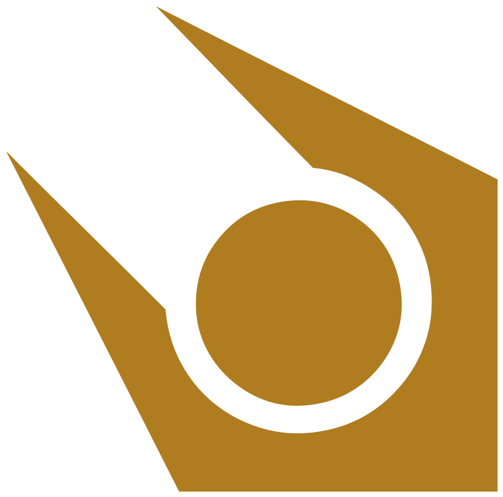
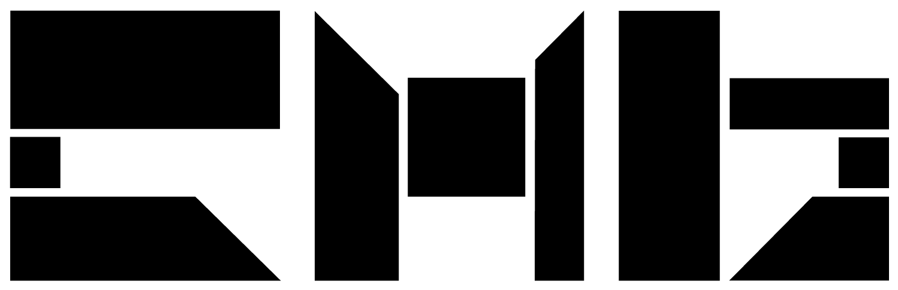
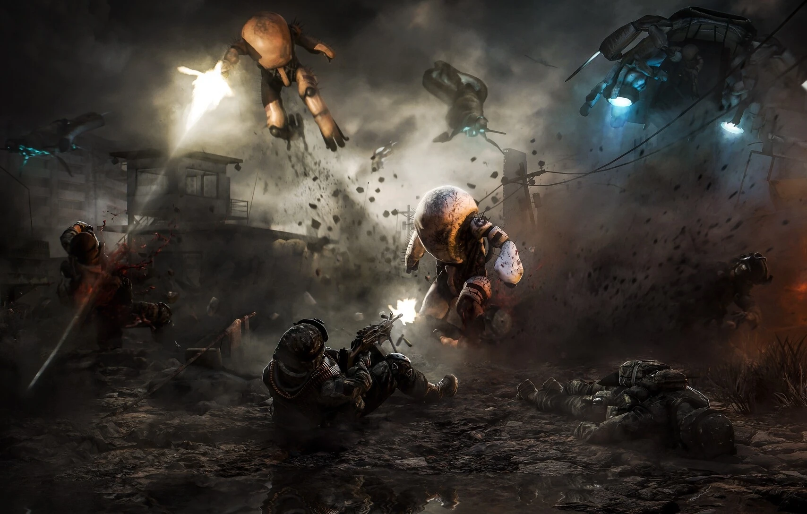
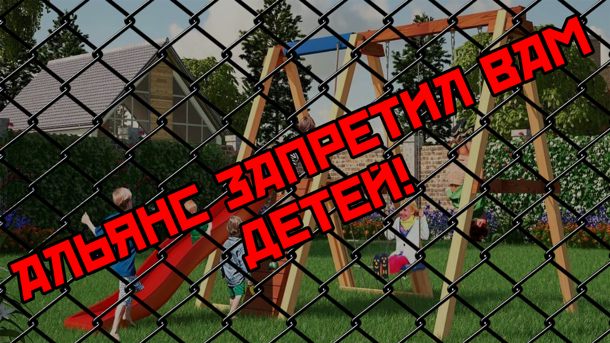

Что такое альянс?


Империя Альянса обширна и включает в себя неизвестное количество параллельных вселенных. Империя населена неизвестным количеством разумных существ. Неизвестно кто ей управляет в Столичном мире Альянса, но на Земле её правителем является доктор Уоллес Брин и Советники. Империя расширяется за счёт захвата новых миров и использования доминирующего вида так, как считает нужным. Манипулируя этими видами различными методами, включающими биотехнологии и имплантации. Продукты такой инженерии Альянса — синтеты, биомеханические организмы, выполняющие различные функции в пределах империи. Альянс также создаёт расы супер-солдат, однозначно адаптированных для конкретных условий завоёванных миров. Этот процесс приводит к очень мобильной и адаптивной военной силе, способной реагировать на любые угрозы и сокрушать любую оппозицию. Причины империализма Альянса остаются неизвестными на протяжении всего сюжета.
На данный момент неизвестно, сколько миров находятся под контролем Альянса. Известно лишь то, что Альянс вторгся в родной мир Нихиланта. В результате, Нихилант и другие виды бежали на Зен, после чего Нихилант закрыл любые пути входа в мир Зен. Благодаря чему мир Зен не подвергся нападению Альянса. Вместе с собой Нихилант перевёз несколько порабощённых или родственных видов, в том числе вортигонтов. После вторжения в неназванный родной мир Нихиланта Земля стала самой известной за последнее время захваченной Альянсом планетой. Она была взята после её сдачи в конце Семичасовой войны. Следуя стандартной процедуре Альянса, доминирующий вид стали изменять, чтобы сформировать новые вооружённые силы Альянса на Земле.
Альянс на земле

После смерти Нихиланта Альянс обнаружил, что в состоянии использовать начавшиеся портальные штормы, происходившие в то время, чтобы достигнуть Земли, где они начали массированное вторжение, закончившееся Семичасовой войной. Исходя из заявлений G-Man'а можно сделать вывод, что люди не смогли создать эффективного сопротивления армии Альянса, и все земные военные силы были практически сразу уничтожены. Бывший администратор научно-исследовательского комплекса Чёрная Меза, Уоллес Брин вел переговоры о капитуляции от имени Земли и был назначен администратором сил Альянса на Земле.
Господство Альянса на земле
Альянс правит Землёй из массивных структур, известных как Цитадели(City 17) или Нексусы надзора(Другие города), самая важная из которых находится в Сити 17, где доктор Брин занимается пропагандой.

Альянс, завоевав господство на Земле, ввёл «подавляющее поле», которое служит для ингибирования репродукции человека. Поле предотвращает формирование определённых белковых цепей, являющихся жизненно важными для эмбрионального развития человека; это эффективно глобально снижает рождаемость людей до нуля и приводит к тому, что живущие сейчас люди могут стать последним поколением.